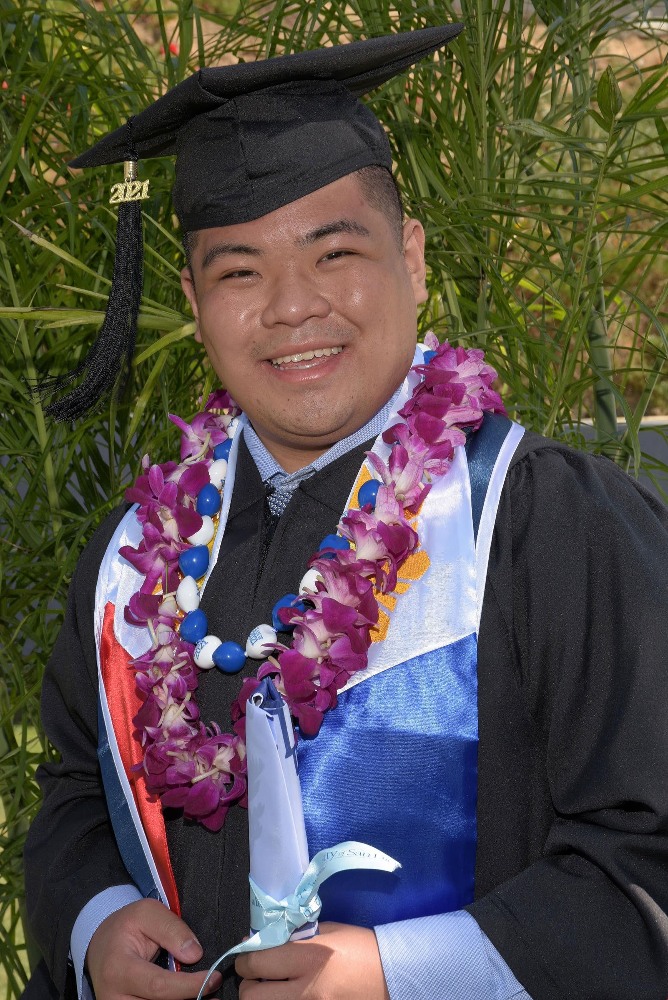

About Me

I graduated from the University of San Diego with a BS/BA in Industrial and Systems Engineering
I am currently working as a Data Engineer, developing data pipelines and transformation for improving data analytics for continuous process improvements.
Certificates and Accomplishments
Diploma | University of San Diego | BS/BA in Industrial and Systems Engineering | Cum Laude
Completed: August 2021
Certificate | Alpha Pi Mu | University of San Diego Chapter | Industrial Engineering Honor Society
Initiated: April 27, 2021
Lean Six Sigma | University of San Diego | Green Belt Certificate
Completed: May 27, 2020
Roy Medina Resume
Updated: August 3, 2021